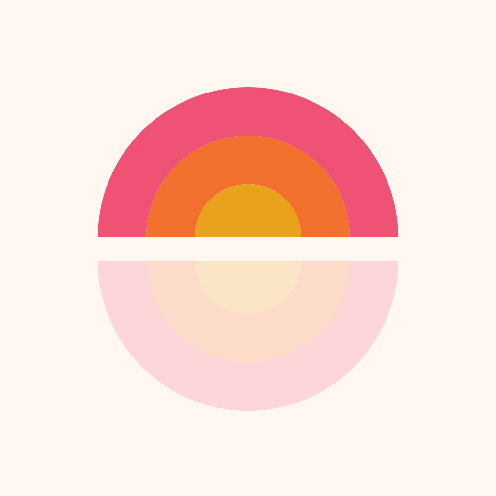
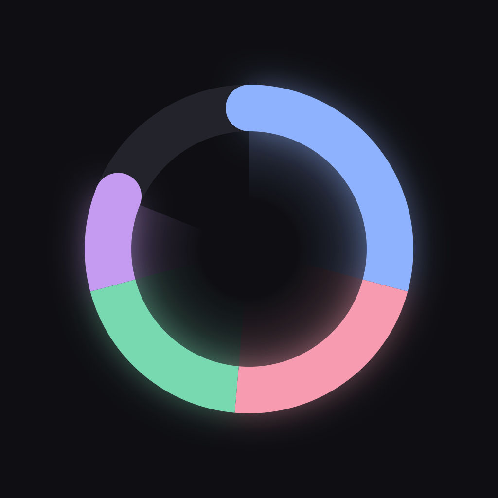
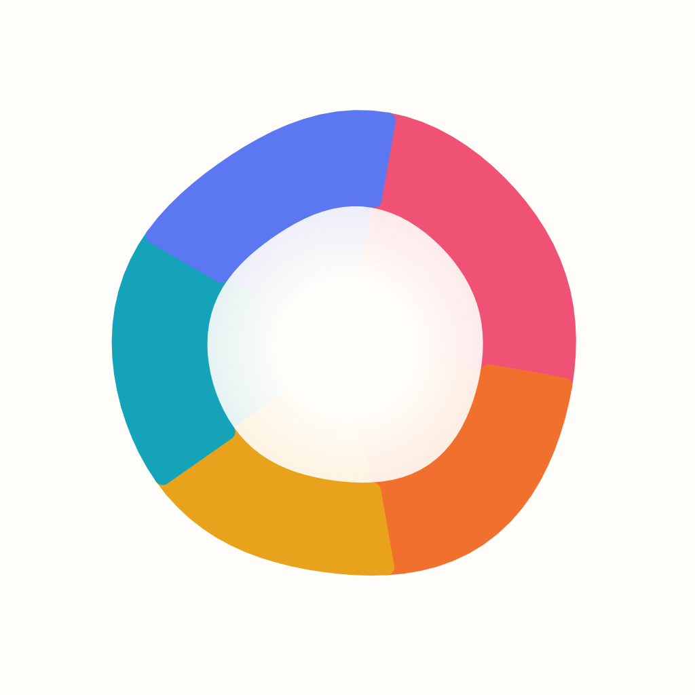
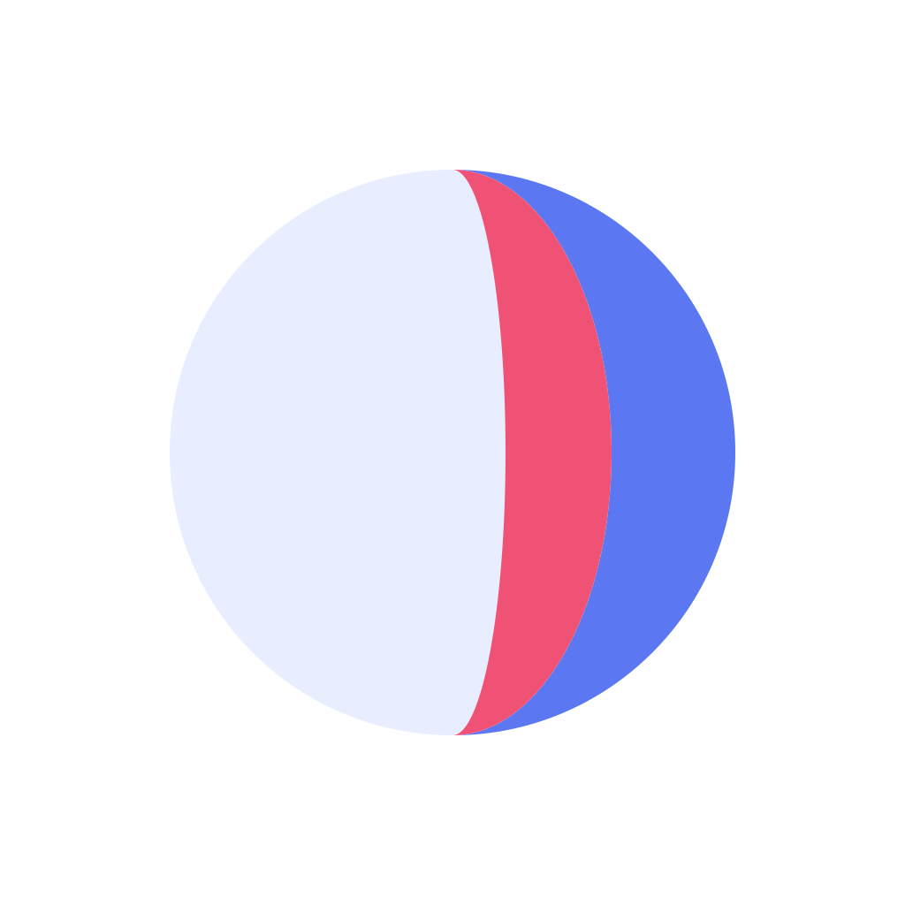
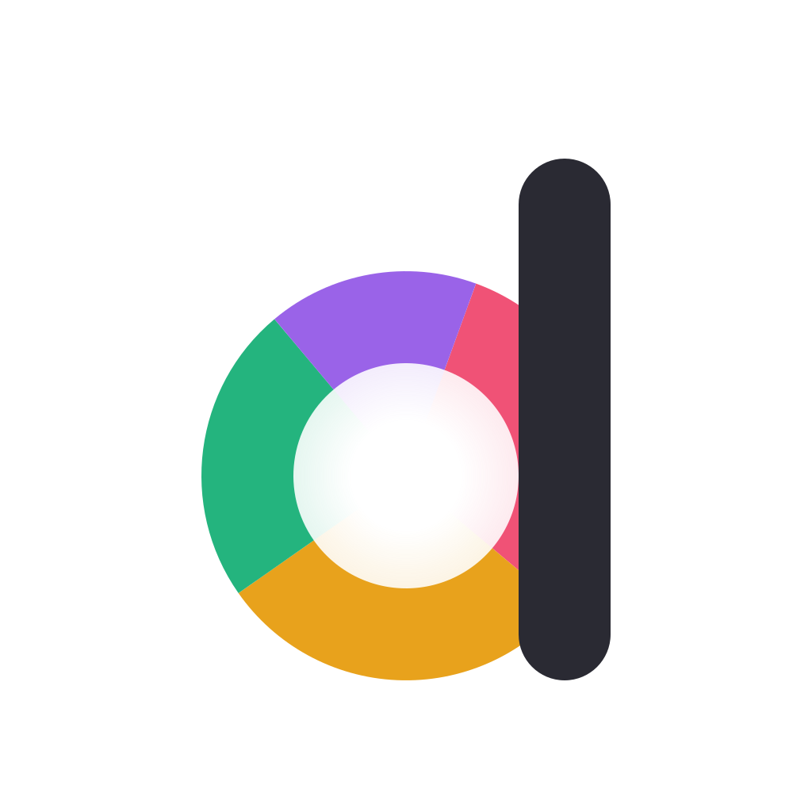

Eight directions. Live icons in public/icons are untouched.
Gapless category arcs fill a soft-washed ring; the Day Mark itself.
One bold blue ring left open, with an amber sun-dot in the gap.
A half-sun of contiguous color bands rising over a pale reflection.

One stroke: a checkmark whose long leg exits a nearly closed ring.
Dark-mode ring with luminous mark-tone arcs and a soft halo.

Organic hand-painted ring, clean edges, gapless colors, soft wash.

A pale circle with stacked blue and rose crescents of completion.

A lowercase d whose bowl is the Day Mark ring.
